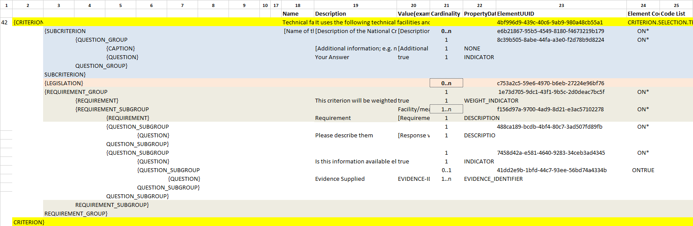

VI.9.5 Self-contained Abilities (II) - Facilities
Data Structure - Self-contained
(The figure below is defined in the the tab ''SC_Abilities_2 (Facilities,…)'' of the ESPD-CriteriaTaxonomy spread-sheet).

Figure 1. Self-contained 'Abilities (II) (Facilities, ….)' criterion data structure
XML Example - Self-contained
Criterion "Technical facilities and measures for ensuring quality" (Self-contained ESPD-Request)
<!-- Header elements removed for brevity -->
<!--
This criterion illustrates how to prepare a selection criterion about ''abilities'', more specifically the criterion
''Technical facilities and measures for ensuring quality''.
-->
<!-- The rest of criteria above and below this criterion have been removed for brevity. -->
<cac:TenderingCriterion>
<cbc:ID schemeID="CriteriaTaxonomy" schemeAgencyID="EU-COM-GROW" schemeVersionID="2.1.0">4bf996d9-439c-40c6-9ab9-980a48cb55a1</cbc:ID>
<cbc:CriterionTypeCode listID="CriteriaTypeCode" listAgencyID="EU-COM-GROW" listVersionID="2.1.0">CRITERION.SELECTION.TECHNICAL_PROFESSIONAL_ABILITY.TECHNICAL.FACILITIES_FOR_QUALITY_ENSURING</cbc:CriterionTypeCode>
<cbc:Name>Technical facilities and measures for ensuring quality</cbc:Name>
<cbc:Description>It uses the following technical facilities and measures for ensuring quality and its study and research facilities are as follows:</cbc:Description>
<!-- This criterion will be used in a second or subsequent evaluation stage. Its relative weight, assigned by the CA, is in this case 5%. -->
<cbc:WeightNumeric>0.05</cbc:WeightNumeric>(1)
<!-- The fact that the criterion is weighted is announced here. -->
<cbc:EvaluationMethodTypeCode listID="EvaluationMethodType" listAgencyID="EU-COM-GROW" listVersionID="2.1.0">WEIGHTED</cbc:EvaluationMethodTypeCode>(2)
<!-- Additional information to help EOs improve their offer, and used also for transparency. See also chapter "Putting things together" and the XML
example in that chapter for details on this. -->
<cbc:WeightingConsiderationDescription>Facilities and quality measures aligned to standards will score better, especially if those standards are European.</cbc:WeightingConsiderationDescription>(3)
<cac:Legislation><!-- data elements removed for brevity --></cac:Legislation>
<!-- The main group of REQUIREMENTs and QUESTIONs start here. -->
<cac:TenderingCriterionPropertyGroup>(4)
<cbc:ID schemeAgencyID="EU-COM-GROW" schemeVersionID="2.1.0">1e73d705-9dc1-43f1-9b5c-2d0deac7bc5f</cbc:ID>
<cbc:PropertyGroupTypeCode listID="PropertyGroupType" listAgencyID="EU-COM-GROW" listVersionID="2.1.0">ON*</cbc:PropertyGroupTypeCode>
<!-- The following property announces that the criterion will be weigthed. It principle it had a two-fold goal: 1) to make know the EO
about the fact that it will be used in a second (or subsequent) stage of the evaluation for its ranking; and 2) for the evaluator (or
system proposing automated evaluation results, to use it during the evaluation phase. However it is, in fact, superfluous or redundant,
as this information is also indicated in the `cbc:EvaluationMethodTypeCode` (type WEIGHTED) and of the relative weight value assigned to
the element `cbc:WeightNumeric`(5% in this example). -->
<cac:TenderingCriterionProperty>(5)
<cbc:ID schemeID="CriteriaTaxonomy" schemeAgencyID="EU-COM-GROW" schemeVersionID="2.1.0">e5ca83df-73d3-4774-8621-81a7914d228c</cbc:ID>
<cbc:Description>This criterion will be weighted</cbc:Description>
<cbc:TypeCode listID="CriterionElementType" listAgencyID="EU-COM-GROW" listVersionID="2.1.0">REQUIREMENT</cbc:TypeCode>
<cbc:ValueDataTypeCode listID="ResponseDataType" listAgencyID="EU-COM-GROW" listVersionID="2.1.0">WEIGHT_INDICATOR</cbc:ValueDataTypeCode>
</cac:TenderingCriterionProperty>
<!-- Notice that multiple subgroups of REQUIREMENT + QUESTION can be used to specify multiple requirements -->
<!-- This is the 1st. Subgroup of REQUIREMENT and QUESTION: Subgroup specifically used for facilities -->
<cac:SubsidiaryTenderingCriterionPropertyGroup>(6)
<cbc:ID schemeAgencyID="EU-COM-GROW" schemeVersionID="2.1.0">f156d97a-9700-4ad9-8d21-e3ac57102278</cbc:ID>
<cbc:PropertyGroupTypeCode listID="PropertyGroupType" listAgencyID="EU-COM-GROW" listVersionID="2.1.0">ON*</cbc:PropertyGroupTypeCode>
<!-- Requirement specifically aimed to ask for details about the facility security measures. -->
<cac:TenderingCriterionProperty>(7)
<cbc:ID schemeID="CriteriaTaxonomy" schemeAgencyID="EU-COM-GROW" schemeVersionID="2.1.0">a8b8f85e-63f3-4364-a7fa-8e8e3004d3e3</cbc:ID>
<cbc:Description>Requirement</cbc:Description>
<cbc:TypeCode listID="CriterionElementType" listAgencyID="EU-COM-GROW" listVersionID="2.1.0">REQUIREMENT</cbc:TypeCode>
<cbc:ValueDataTypeCode listID="ResponseDataType" listAgencyID="EU-COM-GROW" listVersionID="2.1.0">DESCRIPTION</cbc:ValueDataTypeCode>
<cbc:ExpectedDescription>Describe with as much detail as possible the facilities where the EO is developed, and namely these ones:
1) square meters of each storey; 2) quantity of exit gates per storey; 3) number of fire extinguishers per storey; 4) diagram with
the location of the exit doors and of the fire-extinguishers.</cbc:ExpectedDescription>
</cac:TenderingCriterionProperty>
<!-- The following subgroup contains the QUESTION that will be used in the Response as a reference for the Response
of the EO to theREQUIREMENT in the previous subgroup. -->
<cac:SubsidiaryTenderingCriterionPropertyGroup>(8)
<cbc:ID schemeAgencyID="EU-COM-GROW" schemeVersionID="2.1.0">488ca189-bcdb-4bf4-80c7-3ad507fd89fb</cbc:ID>
<cbc:PropertyGroupTypeCode listID="PropertyGroupType" listAgencyID="EU-COM-GROW" listVersionID="2.1.0">ON*</cbc:PropertyGroupTypeCode>
<!-- The UUID of this QUESTION will be used in the Response providing the text that will be used by the evaluators. -->
<cac:TenderingCriterionProperty>
<cbc:ID schemeID="CriteriaTaxonomy" schemeAgencyID="EU-COM-GROW" schemeVersionID="2.1.0">4b0ddbd4-6c8e-42f1-9b39-d372d3ad878c</cbc:ID>(9)
<cbc:Description>Please describe them</cbc:Description>
<cbc:TypeCode listID="CriterionElementType" listAgencyID="EU-COM-GROW" listVersionID="2.1.0">QUESTION</cbc:TypeCode>
<cbc:ValueDataTypeCode listID="ResponseDataType" listAgencyID="EU-COM-GROW" listVersionID="2.1.0">DESCRIPTION</cbc:ValueDataTypeCode>
</cac:TenderingCriterionProperty>
</cac:SubsidiaryTenderingCriterionPropertyGroup>
<!-- The EO can use this subgroup of evidences to, in the response to it (in the ESPD-Response), make the information required available online. The URL should be in the domain of the EO -->
<cac:SubsidiaryTenderingCriterionPropertyGroup>(10)
<cbc:ID schemeAgencyID="EU-COM-GROW" schemeVersionID="2.1.0">7458d42a-e581-4640-9283-34ceb3ad4345</cbc:ID>
<cbc:PropertyGroupTypeCode listID="PropertyGroupType" listAgencyID="EU-COM-GROW" listVersionID="2.1.0">ON*</cbc:PropertyGroupTypeCode>
<cac:TenderingCriterionProperty>
<cbc:ID schemeID="CriteriaTaxonomy" schemeAgencyID="EU-COM-GROW" schemeVersionID="2.1.0">ef6e3621-1098-4b68-b793-787963afe844</cbc:ID>
<cbc:Description>Is this information available electronically?</cbc:Description>
<cbc:TypeCode listID="CriterionElementType" listAgencyID="EU-COM-GROW" listVersionID="2.1.0">QUESTION</cbc:TypeCode>
<cbc:ValueDataTypeCode listID="ResponseDataType" listAgencyID="EU-COM-GROW" listVersionID="2.1.0">INDICATOR</cbc:ValueDataTypeCode>
</cac:TenderingCriterionProperty>
<cac:SubsidiaryTenderingCriterionPropertyGroup>
<cbc:ID schemeAgencyID="EU-COM-GROW" schemeVersionID="2.1.0">41dd2e9b-1bfd-44c7-93ee-56bd74a4334b</cbc:ID>
<cbc:PropertyGroupTypeCode listID="PropertyGroupType" listAgencyID="EU-COM-GROW" listVersionID="2.1.0">ONTRUE</cbc:PropertyGroupTypeCode>
<cac:TenderingCriterionProperty>
<cbc:ID schemeID="CriteriaTaxonomy" schemeAgencyID="EU-COM-GROW" schemeVersionID="2.1.0">0d25f520-02dc-4252-a565-86e4f0879fe5</cbc:ID>
<cbc:Description>Evidence supplied</cbc:Description>
<cbc:TypeCode listID="CriterionElementType" listAgencyID="EU-COM-GROW" listVersionID="2.1.0">QUESTION</cbc:TypeCode>
<cbc:ValueDataTypeCode listID="ResponseDataType" listAgencyID="EU-COM-GROW" listVersionID="2.1.0">EVIDENCE_IDENTIFIER</cbc:ValueDataTypeCode>
</cac:TenderingCriterionProperty>
</cac:SubsidiaryTenderingCriterionPropertyGroup>
</cac:SubsidiaryTenderingCriterionPropertyGroup>
</cac:SubsidiaryTenderingCriterionPropertyGroup>
<!-- Notice that multiple subgroups of REQUIREMENT + QUESTION can be used to specify multiple requirements -->
<!-- This is the 2nd. Subgroup of REQUIREMENT and QUESTION: Subgroup specifically used for quality measures -->
<cac:SubsidiaryTenderingCriterionPropertyGroup>(11)
<cbc:ID schemeAgencyID="EU-COM-GROW" schemeVersionID="2.1.0">f156d97a-9700-4ad9-8d21-e3ac57102278</cbc:ID>
<cbc:PropertyGroupTypeCode listID="PropertyGroupType" listAgencyID="EU-COM-GROW" listVersionID="2.1.0">ON*</cbc:PropertyGroupTypeCode>
<cac:TenderingCriterionProperty>
<cbc:ID schemeID="CriteriaTaxonomy" schemeAgencyID="EU-COM-GROW" schemeVersionID="2.1.0">3a901515-2bf3-435a-922d-8b42acbc61d8</cbc:ID>
<cbc:Description>Requirement</cbc:Description>
<cbc:TypeCode listID="CriterionElementType" listAgencyID="EU-COM-GROW" listVersionID="2.1.0">REQUIREMENT</cbc:TypeCode>
<cbc:ValueDataTypeCode listID="ResponseDataType" listAgencyID="EU-COM-GROW" listVersionID="2.1.0">DESCRIPTION</cbc:ValueDataTypeCode>
<cbc:ExpectedDescription>Describe in detail how much your facilities are aligned with the ISO 9000. Where not aligned justify profusely.
If your explanations are lengthy, make them available online and specify the URL from where to access them freely or make them
available as additional document references or as part of the tender.</cbc:ExpectedDescription>
</cac:TenderingCriterionProperty>
<!-- The following subgroup contains the QUESTION that will be used in the Response as a reference for the Response
of the EO to theREQUIREMENT in the previous subgroup. -->
<cac:SubsidiaryTenderingCriterionPropertyGroup>
<cbc:ID schemeAgencyID="EU-COM-GROW" schemeVersionID="2.1.0">488ca189-bcdb-4bf4-80c7-3ad507fd89fb</cbc:ID>
<cbc:PropertyGroupTypeCode listID="PropertyGroupType" listAgencyID="EU-COM-GROW" listVersionID="2.1.0">ON*</cbc:PropertyGroupTypeCode>
<!-- The UUID of this QUESTION will be used in the Response providing the text that will be used by the evaluators. -->
<cac:TenderingCriterionProperty>
<cbc:ID schemeID="CriteriaTaxonomy" schemeAgencyID="EU-COM-GROW" schemeVersionID="2.1.0">c7169ea8-cce8-4d1a-83de-a862ba9d4121</cbc:ID>
<cbc:Description>Please describe them</cbc:Description>
<cbc:TypeCode listID="CriterionElementType" listAgencyID="EU-COM-GROW" listVersionID="2.1.0">QUESTION</cbc:TypeCode>
<cbc:ValueDataTypeCode listID="ResponseDataType" listAgencyID="EU-COM-GROW" listVersionID="2.1.0">DESCRIPTION</cbc:ValueDataTypeCode>
</cac:TenderingCriterionProperty>
</cac:SubsidiaryTenderingCriterionPropertyGroup>
<!-- The EO can use this subgroup of evidences to, in the response to it (in the ESPD-Response),
make the information required available online. The URL should be in the domain of the EO. -->
<cac:SubsidiaryTenderingCriterionPropertyGroup>
<cbc:ID schemeAgencyID="EU-COM-GROW" schemeVersionID="2.1.0">7458d42a-e581-4640-9283-34ceb3ad4345</cbc:ID>
<cbc:PropertyGroupTypeCode listID="PropertyGroupType" listAgencyID="EU-COM-GROW" listVersionID="2.1.0">ON*</cbc:PropertyGroupTypeCode>
<cac:TenderingCriterionProperty>
<cbc:ID schemeID="CriteriaTaxonomy" schemeAgencyID="EU-COM-GROW" schemeVersionID="2.1.0">4d79fcb6-7b36-4208-984b-5c511d1257fa</cbc:ID>
<cbc:Description>Is this information available electronically?</cbc:Description>
<cbc:TypeCode listID="CriterionElementType" listAgencyID="EU-COM-GROW" listVersionID="2.1.0">QUESTION</cbc:TypeCode>
<cbc:ValueDataTypeCode listID="ResponseDataType" listAgencyID="EU-COM-GROW" listVersionID="2.1.0">INDICATOR</cbc:ValueDataTypeCode>
</cac:TenderingCriterionProperty>
<cac:SubsidiaryTenderingCriterionPropertyGroup>
<cbc:ID schemeAgencyID="EU-COM-GROW" schemeVersionID="2.1.0">41dd2e9b-1bfd-44c7-93ee-56bd74a4334b</cbc:ID>
<cbc:PropertyGroupTypeCode listID="PropertyGroupType" listAgencyID="EU-COM-GROW" listVersionID="2.1.0">ONTRUE</cbc:PropertyGroupTypeCode>
<cac:TenderingCriterionProperty>
<cbc:ID schemeID="CriteriaTaxonomy" schemeAgencyID="EU-COM-GROW" schemeVersionID="2.1.0">e9b9ff43-4397-46a2-a19c-37e109da5407</cbc:ID>
<cbc:Description>Evidence supplied</cbc:Description>
<cbc:TypeCode listID="CriterionElementType" listAgencyID="EU-COM-GROW" listVersionID="2.1.0">QUESTION</cbc:TypeCode>
<cbc:ValueDataTypeCode listID="ResponseDataType" listAgencyID="EU-COM-GROW" listVersionID="2.1.0">EVIDENCE_IDENTIFIER</cbc:ValueDataTypeCode>
</cac:TenderingCriterionProperty>
</cac:SubsidiaryTenderingCriterionPropertyGroup>
</cac:SubsidiaryTenderingCriterionPropertyGroup>
</cac:SubsidiaryTenderingCriterionPropertyGroup>
</cac:TenderingCriterionPropertyGroup>
</cac:TenderingCriterion>
<!-- Rest of elements removed for brevity -->| 1 | The fact that the criterion is weighted implies that the procedure will go throught at least of stages of the evaluation, the first one is used to exclude and select EOs, the second or other subsequent evaluation stages will be used to short-list and rank the best tenders based on the relative weights of the selected criteria that are weighted. See section "IX Putting all pieces together/IX.2 All about weights" for more details. In this example, the relative weight assigned by the CA to this criterion is 5%. |
| 2 | The fact that the criterion is weighted is also announce wiht the code WEIGHTED, in the element cac:EvaluationMethodTypeCode. This can be used by automated techniques (e.g. DPS, eAuction, other) to apply automated evaluation processes. |
| 3 | Additional information used for clarifications and transparency purposes. |
| 4 | Main group of REQUIREMENTs and QUESTIONs. |
| 5 | The following property announces that the criterion will be weigthed. It principle it had a two-fold goal: 1) to make know the EO about the fact that it will be used in a second (or subsequent) stage of the evaluation for its ranking; and 2) for the evaluator (or
system proposing automated evaluation results, to use it during the evaluation phase. However it is, in fact, superfluous or redundant, as this information is also indicated in the cbc:EvaluationMethodTypeCode (type WEIGHTED) and of the relative weight value assigned to the element cbc:WeightNumeric(5% in this example). |
| 6 | Notice that multiple subgroups of REQUIREMENT + QUESTION can be used to specify multiple requirements. The 1st. Subgroup of REQUIREMENT and QUESTION: Subgroup specifically used for facilities starts here. |
| 7 | Requirement specifically aimed to ask for details about the facility security measures. The second subgroup of REQUIREMENT + QUESTION will ask about other aspects: the degree of alignement to an ISO. |
| 8 | Sub-subgroup containing the QUESTION that will be used in the Response as a reference for the Response of the EO to theREQUIREMENT in the previous subgroup. |
| 9 | This UUID will be used in the Response providing the text that will be used by the evaluators. Beware that the UUID is not illustrated in the spread-sheet data structure because it is generated automatically. |
| 10 | Subgroup for evidences. The EO can use it to, in the response to it (in the ESPD-Response), make the information required available online. The URL should be in the domain of the EO. |
| 11 | The 2nd. Subgroup of REQUIREMENT + QUESTION starts here, in this case to ask about for other specificic quality measures (e.g. alignment to the ISO 9000). |